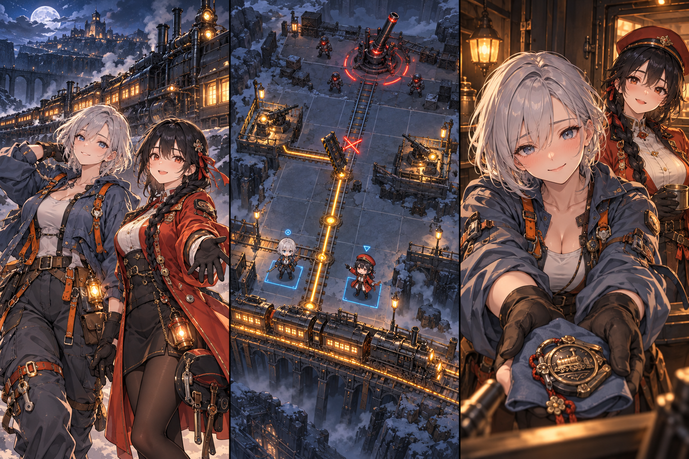
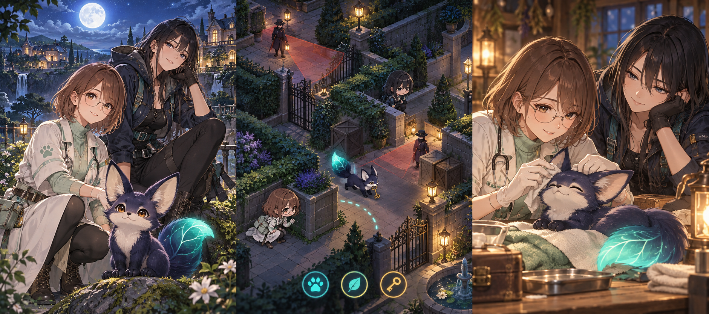
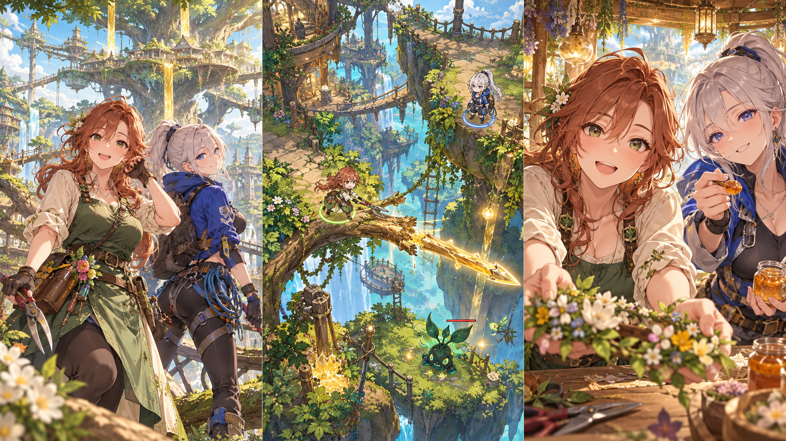
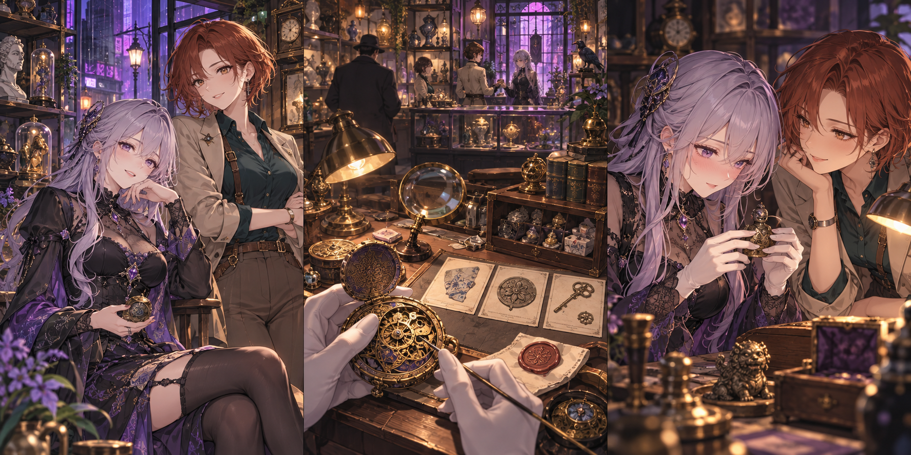
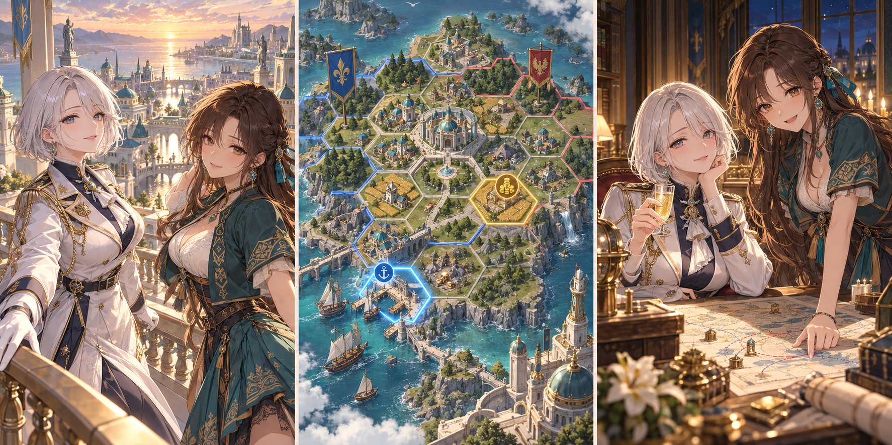

線路の砦
物流シミュレーション × ターン制戦術
プレイヤーは列車と砲台を守る指揮官となり、峡谷を抜ける。可動式レールを跳ね上げれば敵弾を防げるが、その区間を列車が通れなくなり、砲台への補給も止まる。攻撃予告と到着予定を見ながら線路の開閉や修理を選び、砲台を守ることと弾薬を届けることを両立させる。
企画書PDF · 編集元 · プレイ画面モック · 交流画面モックスマホWeb・片手縦持ち・1回10〜20分。ジャンルの掛け算と、成人ヒロインとの濃い交流を比較する企画資料です。掲載画面は未実装のイメージです。

物流シミュレーション × ターン制戦術
プレイヤーは列車と砲台を守る指揮官となり、峡谷を抜ける。可動式レールを跳ね上げれば敵弾を防げるが、その区間を列車が通れなくなり、砲台への補給も止まる。攻撃予告と到着予定を見ながら線路の開閉や修理を選び、砲台を守ることと弾薬を届けることを両立させる。
企画書PDF · 編集元 · プレイ画面モック · 交流画面モック
相棒育成 × ターン制ステルス
プレイヤーは忍び獣と密猟施設に潜入し、捕まった仲間を救出する。成功した移動方法を習慣に登録すると、獣は同じ地形で自分から行動する。ただし、任務が変わると同じ習慣が危険を招くこともある。プレイヤーは数が限られた餌や命令を使い、獣の行動を変えて安全な経路を作る。
企画書PDF · 編集元 · プレイ画面モック · 交流画面モック
片手探索アクションRPG × 園芸
プレイヤーは冒険者として巨大樹を登り、街を脅かす病気を治す。枝を足場に移動し、敵と戦いながら進むが、横枝を刈れば装備を作る木材も得られる。その代わり足場と先にある道は失われるため、剪定中は時間を止め、装備を得るか移動経路を残すかを選ぶ。
企画書PDF · 編集元 · プレイ画面モック · 交流画面モック
骨董店経営 × 品物の由来を調べる推理
プレイヤーは骨董店の店主となり、刻印や帳簿を調べて品物の由来を推理し、売買する。贋作が出回っていると街に公表すれば謝礼を得られるが、自分が持つ同じ工房の品も値下がりする。二人の相棒に相談し、店の資金を確保しながら六つの事件を解く。
企画書PDF · 編集元 · プレイ画面モック · 交流画面モック
領地をつなぐ戦略 × 競売
プレイヤーは小国の君主となり、食糧と返済の現金を確保しながら競売で領地を増やす。土地を担保に選べば入札額を増やせるが、その土地の生産は止まる。畑を止めて港の取得を狙うか、食糧を残すかを、二人の側近に相談して決める。
企画書PDF · 編集元 · プレイ画面モック · 交流画面モック